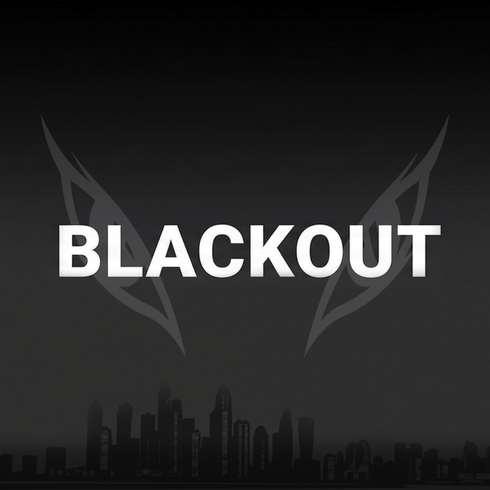

Blackout OGSystem observation
Infrastructure fails in silence first. Signal does not.
Breaking News: Economies buckle under debt and inflation, war redraws borders faster than treaties can hold, and with Donald Trump back in the Oval Office, markets and alliances are repricing overnight — grid operators from Berlin to Buenos Aires quietly warn: the next civilizational blackout may arrive as policy, not accident. Fuel your conviction before the feed goes dark.
When the system goes dark, we see clearly.
Not for everyone. Never was.
Mint
A7uNaYtbF7WpchS4t4dwkfqbUbGmmGHXGX9GcXm6pump
Who Blackout is for and what 2026 signals mean
Not for everyone. Never was.
For wallets that move before the timeline catches up — no crowd to cosign the entry.
Conviction over clout. Timing over hype.
If you need permission to click, you’re already priced out.
Grid → chain · same entropy, different venue
2025 wrote the cracks into the record. 2026 prices how deep they go.
Four regions. Different flags. One failure pattern repeating off-chain.
Systems don’t rug in a single block — they fray quietly while dashboards still read green.
Demand stacks, margins vanish, redundancy becomes a story on paper. Containment gets expensive.
Nobody mints a headline for “crisis.” It shows up in liquidity and latency first.
You either see it… or you don’t.